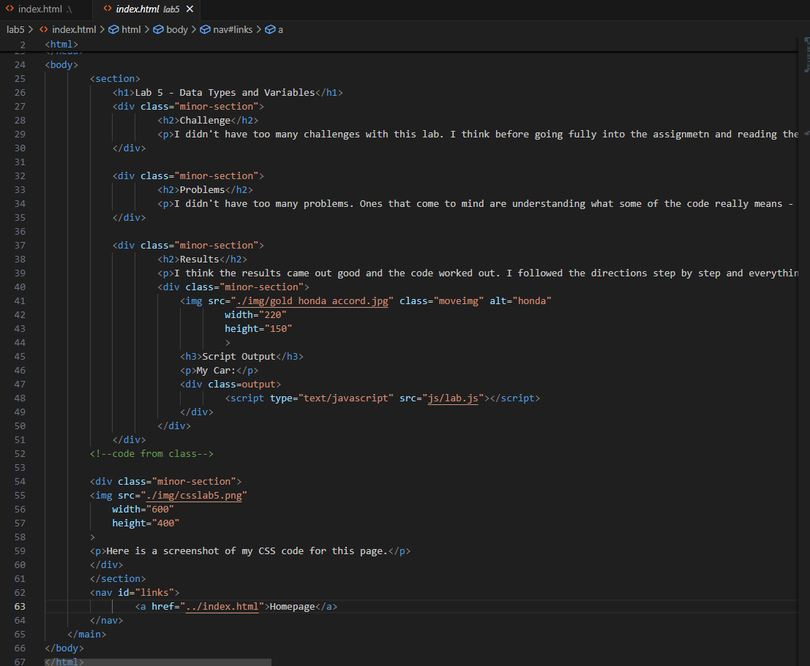
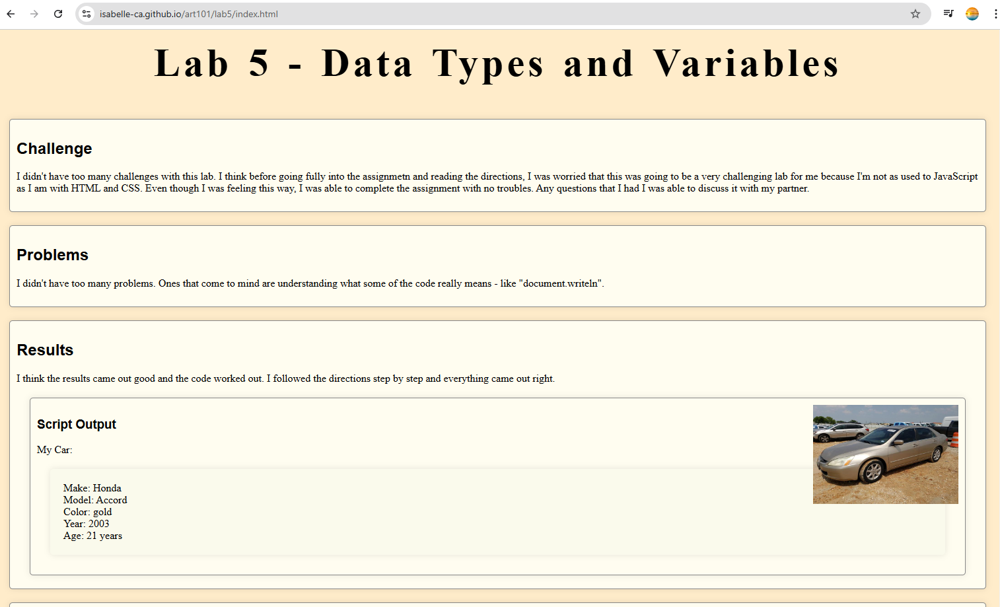

Lab 14: Debugging
Challenge
With a partner, use your debugging knowledge to fix old assignments.
Problems
I didn't have too many problems when completing this assignment. There wasn't anything that needed a whole lot of work on. I just mostly worked on the CSS and moved things around in HTML so that things on the page were consistent.
Results
Overall, I think this lab turned out well. I was able to complete the assignment with not many issues. I like that I was able to look back and see the work I've done and see where I'm at now. I also like that I was able to organize some things and make the pages look more alike.
Debugging
In Lab 5, I moved the div around so that things would look less messy. I also made sure that whatever was in the script output was a part of the div for results. After looking at each of the labs and making sure they had a similar style, I then also made sure that each page had a back homepage link at the bottom.
 